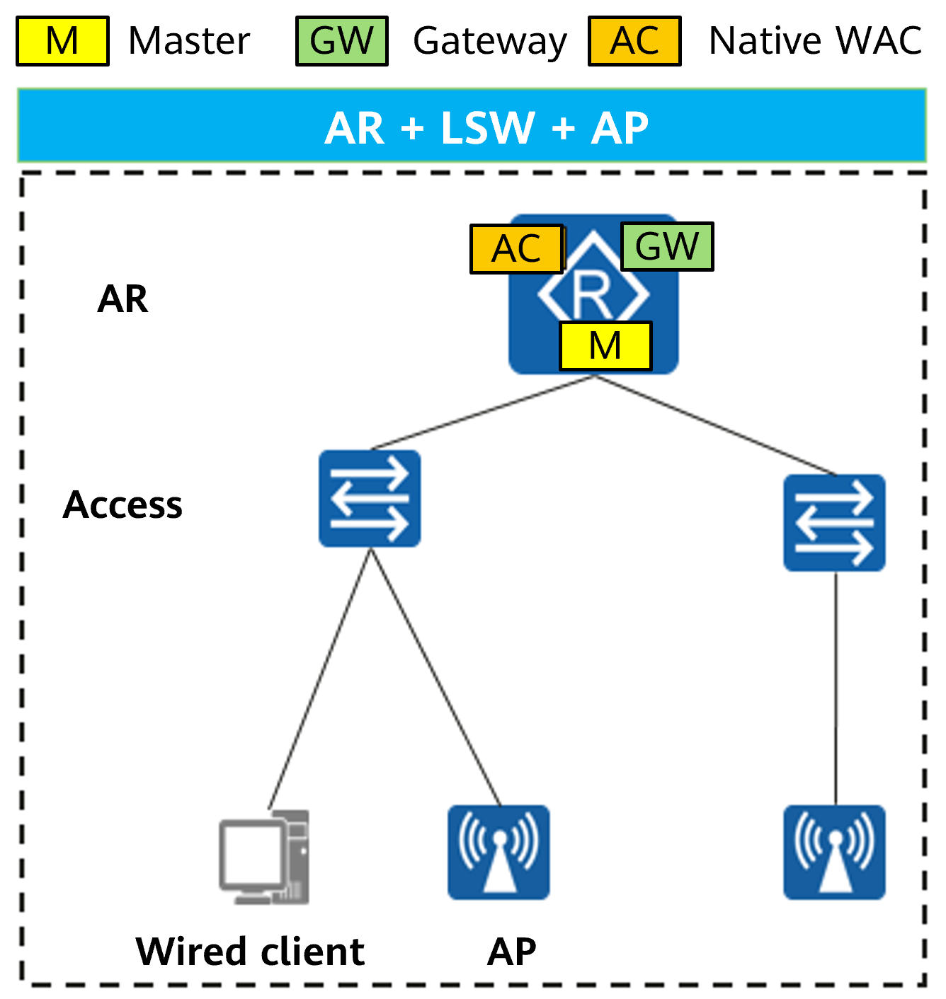
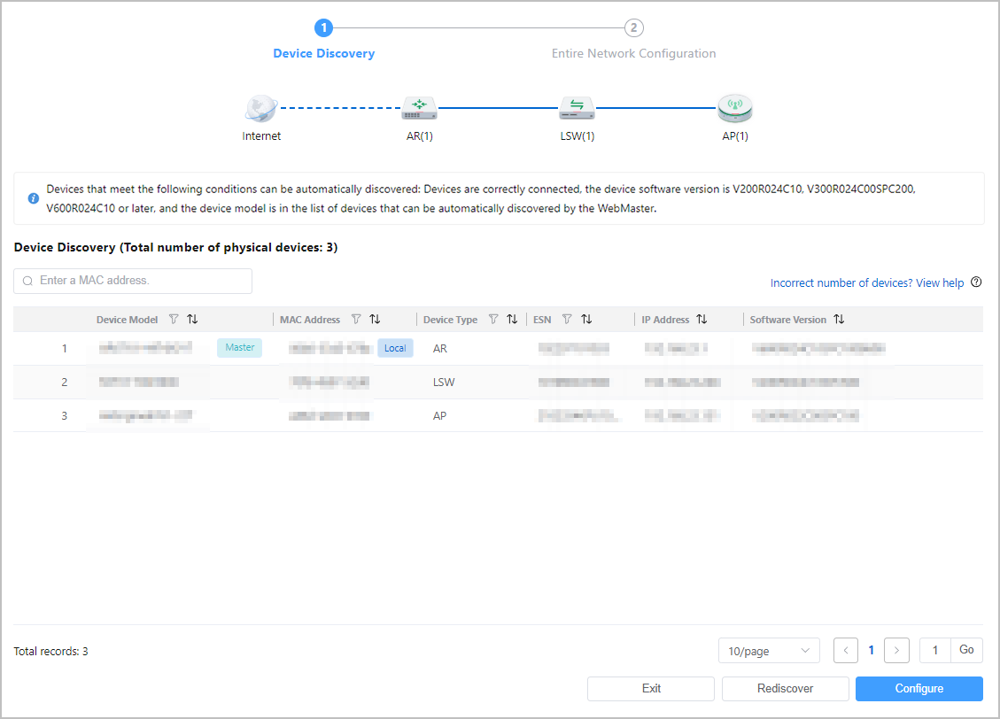
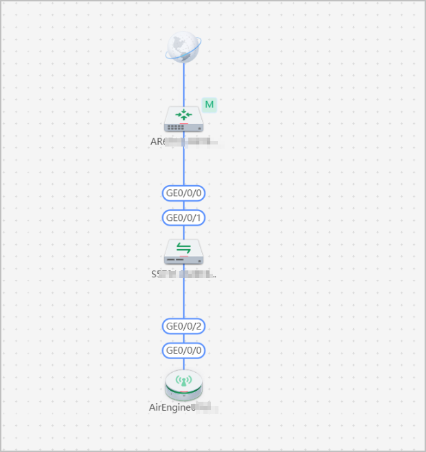
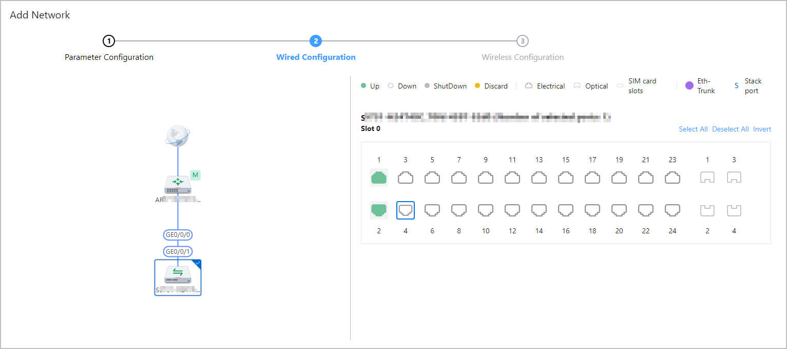
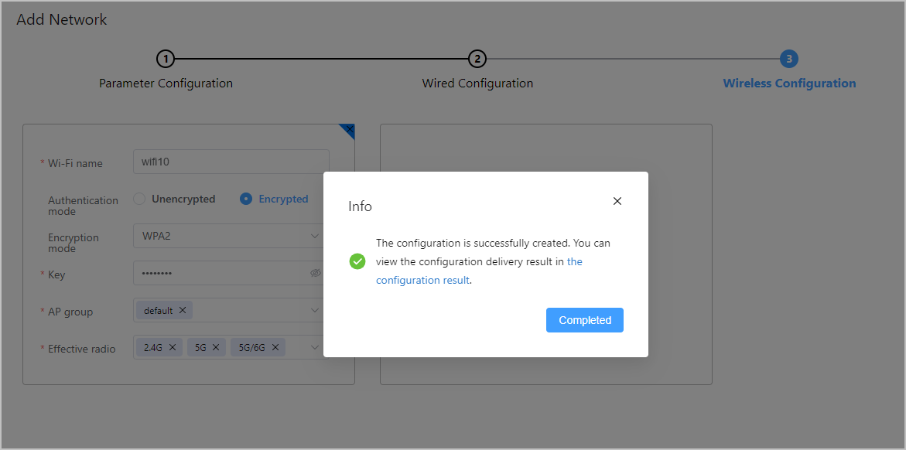
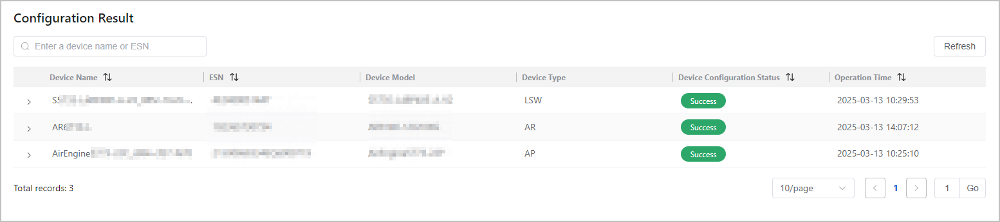

[V600] Example for Deploying Egress Gateway + Single-Layer Switch + AP Networking (1000 Terminals)
Application Scenario
This networking solution applies to small and midsize experience stores and logistics/insurance stores with fewer than 1000 concurrent online terminals.
Networking Overview
1. The AR functions as the gateway and provides egress features (including WAN access, DHCP, and NAT).
2. Campus switches use single-layer networking.
3. The native WAC function of the AR is used to manage APs on the entire network. The AR functions as the gateway for both wired and wireless users. Access switches function as access points for wired clients, connect to APs, and provide PoE power supply. APs function as access points for wireless clients.

Number of users: < 1000 (IPv4 single-stack users)
[Deployment design]
I. Master device deployment
The AR functions as the master device.
II. Gateway deployment
The AR functions as the management gateway, service gateway, and egress gateway.
III. Wired network deployment
Wired clients access the AR through switches.
IV. Wireless network deployment
1. The native WAC function of the AR is used to manage APs on the entire network.
2. APs work in Fit mode and provide access for wireless clients.
V. Deployment suggestions
1. This networking solution applies to small and midsize experience stores and logistics/insurance stores with fewer than 1000 concurrent online clients.
Recommended Models
Location |
Networking Example |
Quantity |
Deployment Mode |
Description |
|---|---|---|---|---|
AR |
AR6710-L |
1 |
Standalone |
- |
Access |
S5735-L-V2/S5751R-L |
1 to 8 |
Standalone |
- |
AP |
Wi-Fi 6/Wi-Fi 7 series |
1 to 100 |
- |
- |
WAC |
AR6710-L (native WAC) |
1 |
Standalone |
- |
Precautions
- If the AR connects to a member device through a WAN interface, ensure that the interface has been configured to operate as a LAN interface using the portswitch command.
- Member devices can be managed only through VLAN 1. Interconnection interfaces need to allow packets from VLAN 1 to pass through, which is a default configuration.
- If you need to switch from WebMaster to the web system of a member device, ensure the PC used to log in to WebMaster is on the same network segment as VLANIF 1 on the member device, or on the same network segment as the virtual IP address of the master device.
- For wireless traffic, only direct forwarding can be deployed through WebMaster.
- For member devices with non-factory configurations, when configuring them for onboarding, ensure that the AAA username, password, and service type are consistent with those on the master device, and the DHCP client function is enabled on VLANIF 1. For details, see 3.
Deployment Roadmap
- Configure the net assistant function on the AR using the CLI and configure an AAA account to facilitate logins to WebMaster from any wired terminal.
- Enable LLDP globally on the AR.
- Power on and start a member device with factory configurations. If a member device cannot start with factory configurations, you can manually configure the device to bring it online.
- Configure wired and wireless services on the network.
Data Plan
Item |
Parameter |
Data |
|---|---|---|
Entire Network Configuration page |
Internet access port |
Select an Internet access port based on the actual situation. |
Internet access mode |
DHCP |
|
DNS Server |
Default settings |
|
Entire network management configuration |
Username: admin123 Password: YsHsjx_202206 |
|
Parameter Configuration page for creating a wired service network |
Service VLAN name |
subnet1 |
VLAN ID |
VLAN 10 |
|
IP address/Mask |
192.168.10.1/24 |
|
DNS server settings and lease |
Default settings |
|
Parameter Configuration page for creating a wireless service network |
Service VLAN name |
subnet2 |
VLAN ID |
VLAN 20 |
|
IP address/Mask |
192.168.20.1/24 |
|
DNS server settings and lease |
Default settings |
|
Wireless Configuration page |
Wi-Fi name |
wifi10 |
Authentication mode |
Encrypted |
|
Encryption mode |
WPA2 |
|
Key |
Root@123 |
|
AP Group |
Default AP group: default |
|
Effective Radio |
2.4G, 5G, and 5G/6G |
Procedure
- Log in to the AR through the web system for the first time or through the console port, and then enable the WebMaster function.
- Log in to the AR through the web system for the first time and enable the WebMaster function.
- Log in to the web system.Connect the network port of the administrator PC to the management port of the AR and set the IP address of the network port on the administrator PC to 192.168.1.2. Then open a browser on the PC and enter https://192.168.1.1:443 in the address box. The page for creating an administrator account is displayed. Enter the username admin123 and password YsHsjx_202206, confirm the password YsHsjx_202206, and click Create. The AAA account is then created.Figure 1 Logging in to the web system

- Log in to the web system using the created AAA account.
- Configure the AR as the master device by enabling the WebMaster function.On the web system of the AR, choose Config > Enable WebMaster. The Enable WebMaster page is displayed.Figure 2 Enabling the WebMaster function
 In the dialog box that is displayed, click OK to enable the WebMaster function.Figure 3 Confirming the operation
In the dialog box that is displayed, click OK to enable the WebMaster function.Figure 3 Confirming the operation
- Log in to the web system.
- Log in to the AR through the console port and enable the WebMaster function.# Configure the AR as the master device.
<HUAWEI> system-view [HUAWEI] sysname AR [AR] ual role controller
# Create a local AAA account for WebMaster login.[AR] aaa [AR-aaa] local-user admin123 password irreversible-cipher YsHsjx_202206 [AR-aaa] local-user admin123 service-type http [AR-aaa] local-user admin123 privilege level 3 [AR-aaa] quit
- Log in to the AR through the web system for the first time and enable the WebMaster function.
- Enable LLDP globally.
[AR] lldp enable - Power on and start the access devices LSW and AP with factory configurations.

If a member device cannot start with factory configurations, you can manually configure the device to bring it online.
(Optional) Manually configure an access switch running V600 to bring it online.<HUAWEI> system-view [HUAWEI] sysname LSW [LSW] aaa [LSW-aaa] local-user admin123 password irreversible-cipher YsHsjx_202206 [LSW-aaa] local-user admin123 service-type http ssh [LSW-aaa] local-user admin123 privilege level 3 [LSW-aaa] quit [LSW] interface vlanif 1 [LSW-Vlanif1] ip address dhcp-alloc [LSW-Vlanif1] quit [LSW] web-manager server-source -i Vlanif1 [LSW] web-manager enable port 443 [LSW] web-manager http forward enable
- Log in to WebMaster on the administrator PC.
- Connect the administrator PC to a service port of the AR using an Ethernet cable. (There is no need to configure the service port. Use its default configuration.) Set the static IP address of the PC to 10.231.10.200/24 (on the same network segment as the virtual IP address 10.231.10.253 of the net assistant function). Alternatively, configure the PC to automatically obtain an IP address.
- Open a browser on the PC and enter https://10.231.10.253 in the address box. Enter the username admin123 and password YsHsjx_202206 to log in to WebMaster.
- Check whether all devices on the network have been discovered. If not, click Rediscover. If so, click Configure to access the Entire Network Configuration page.Figure 4 Checking devices discovered on the network

If the devices in the discovered device list are inconsistent with those on the actual network, check whether the device software version is V600R024C10/V200R024C10/V300R024C00SPC200 or later and whether the physical connections of the devices are normal. If so, click Rediscover in the lower right corner to rediscover devices on the network. If devices still cannot be discovered, continue with the deployment configuration. After the deployment is complete, import devices in the device list.
- Configure the network.Configure the AR as the egress gateway and WAC. Set other parameters as needed according to Table 2.
- You can either set Entire network account to the AAA account created in step 1 or a new account. If a member device on the entire network starts with non-factory configurations, Entire network account must be set to the account of this member device.
- Remember the username and password configured under Entire network management configuration, as they cannot be changed after deployment. If the specified username is identical to the current login username, the password must also match the current login password.
- After delivering the network-wide configuration, to return to the beginning of the deployment wizard, restore the master device to factory settings and log in to WebMaster again.
Figure 5 Entire Network Configuration page Click Deliver Configuration. The overview page is then displayed.Figure 6 Overview page
Click Deliver Configuration. The overview page is then displayed.Figure 6 Overview page
- Configure a wired service network.
- Choose . On the Service Network page that is displayed, click
 . The Add Network page is then displayed.
. The Add Network page is then displayed.Configure a wired service network according to Table 2, as shown in Figure 7.
- Click Next. The Wired Configuration page is displayed.
Click the access device where the subnet is to be deployed, after which ports available on the device will appear on the right. Select the port that connects the access device to the PC and click Next.
Figure 8 Wired Configuration page
- Click Deliver Configuration.
- Choose . On the Service Network page that is displayed, click
- Configure a wireless service network.
- Choose . On the Service Network page that is displayed, click
 . The Add Network page is then displayed.
. The Add Network page is then displayed.
- Click Next to access the Wired Configuration page. Then directly click Next and click
 on the Wireless Configuration page that is displayed to add a network.Figure 10 Adding a network
on the Wireless Configuration page that is displayed to add a network.Figure 10 Adding a network
- Configure a wireless network according to Table 2, as shown in Figure 11.
- Click Deliver Configuration. In the dialog box that is displayed, click OK.Figure 12 Configuration success

- Choose . On the Service Network page that is displayed, click
Verifying the Configuration
On WebMaster, choose . The Configuration Result page is displayed.
